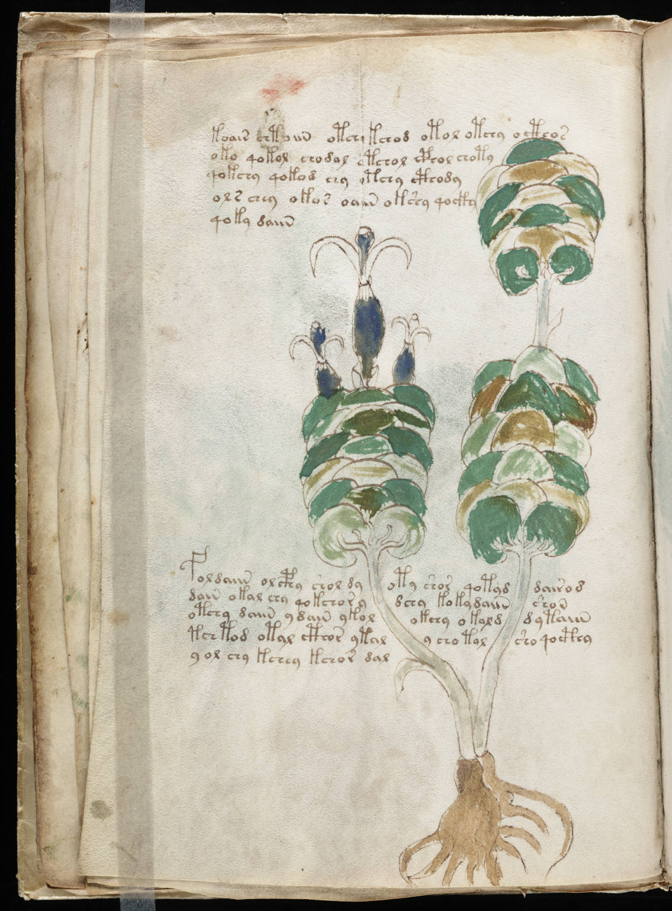

f13v
1koair chtoiin otchy kchod otol otchy octhos2oko qokol chodal otchol cphol choty3qokchy qokod chy otchy cthody4ols chey okos oaiin okshy qocky5qoky daiin6foldaiin olcphy sholdy oty shor qotyddairo d7dain okal chy qokchorydchy koky daiinshoin8otchy daiin y dain ykolokchy okald dytaiin9tchtod otal cthor ytaly cho talsho qocthy10y ol chy kchey kchor dal
